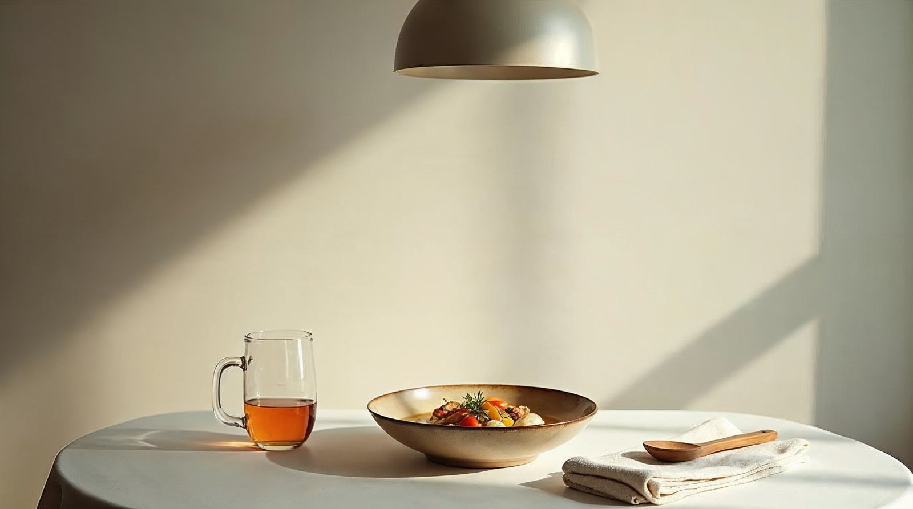

이종호 한의사 감수좋은꿈참사랑한의원 대표원장 (한의사 면허번호 19769)발행 2026-11-23 · 수정 2026-11-26
이 글의 차례
- 왜 이런 불편이 생길 수 있나요
- 먼저 이렇게 여쭙니다
- 일상에서 먼저 해 볼 수 있는 것
- 잠드는 것과 푹 자는 것은 어떻게 다른가요?
- 왜 늦은 저녁이 다음 날 저녁까지 이어질까요?
- 술자리 다음 날은 이렇게 보내 보세요
- 자주 하는 오해
- 저녁 메뉴를 고를 때 이것만 보세요
- 몸이 보내는 신호로 나눠 봐요
- 술자리가 있는 날, 전·중·후로 나눠 보세요
- 야식이 당길 때 스스로 물어볼 세 가지
- 늦게 귀가하는 날의 저녁 준비
- 혼자 마시는 술은 따로 살펴봐요
- 제가 할 일과 부탁드릴 한 가지
- 한의원에서 함께 살필 수 있는 경우
- 이렇게 기록해 오시면 상담이 쉬워집니다
- 이런 증상은 먼저 확인이 필요합니다
식사와 술은 잠과 서로 영향을 주고받습니다. 늦은 저녁과 술자리가 잦은 주에는 잠이 얕아지고, 잠이 모자란 날에는 다시 배가 고파지는 고리가 생기기도 합니다. 불면과 대사 문제가 함께 오기 쉬운 것도 이런 고리 때문일 수 있어, 저녁 시간표를 먼저 들여다봅니다.
회식이나 모임으로 하루 이틀 잠을 설친 정도라면 저녁 습관부터 2주쯤 바꿔 보시고, 술을 줄였는데도 새벽에 깨는 밤이 일주일에 세 번 넘게 이어지면 진료에서 함께 살펴보시길 권합니다. 속쓰림이나 신물 때문에 자주 깬다면 내과 진료로 먼저 확인해 보세요.
왜 이런 불편이 생길 수 있나요
- 술은 잠드는 것은 쉽게 해 주는 듯해도 수면 후반을 얕게 하고 새벽에 깨게 하는 것으로 알려져 있습니다.
- 늦은 시간의 과식은 누웠을 때 속쓰림과 신물을 불러 잠을 방해할 수 있습니다.
- 기름지고 짠 야식은 갈증과 밤 소변으로 이어지기도 합니다.
- 잠이 부족하면 식욕이 커지는 경향이 있는 것으로 알려져 있어, 다음 날 저녁에 또 과식하게 되는 경우가 있습니다.
- 술자리에서 함께 먹는 안주는 양을 가늠하기 어려워 생각보다 늦고 많이 먹게 되는 경우가 많습니다.
술이 깨면서 새벽 두세 시에 눈이 떠지고, 목이 마르고 몸에 열이 올라 다시 잠들기 어려웠다는 말씀을 자주 듣습니다. 한의학에서는 이런 밤의 열감과 갈증, 다음 날 아침의 무거움과 소화 상태를 함께 놓고 봅니다.
또 술은 목과 혀 주변 근육을 느슨하게 해 코골이를 심하게 만들 수 있는 것으로 알려져 있어, 술 마신 날에만 코를 크게 곤다는 이야기를 가족에게 들으셨다면 그것도 함께 말씀해 주세요. 자다가 숨이 멎는 것 같다는 말까지 들으셨다면 수면 검사로 먼저 확인하는 것이 좋습니다.
먼저 이렇게 여쭙니다
- 저녁 식사는 몇 시에, 얼마나 드시나요?
- 야식은 얼마나 자주, 무엇을 드시나요?
- 술은 일주일에 몇 번, 한 번에 얼마나 드시나요?
- 술을 마신 날 새벽에 깨거나 아침이 더 무겁나요?
- 잠을 설친 다음 날 단 음식이나 야식이 더 당기나요?
저녁 습관을 스스로 점검해 볼 수 있는 목록입니다. 세 가지 이상 해당하면 저녁 시간표부터 바꿔 보시길 권합니다.
- 저녁 식사를 마치고 두 시간이 안 돼 눕는 날이 일주일에 세 번 이상이다.
- 일주일에 세 번 넘게 술을 마신다.
- 술을 마시지 않으면 잠들기 어렵다고 느낀다.
- 누우면 속쓰림이나 신물이 올라온다.
- 야식을 먹은 다음 날 아침 입맛이 없다.
- 밤에 목이 말라 깨거나 화장실에 가느라 깬다.
일상에서 먼저 해 볼 수 있는 것
- 저녁 식사는 잠들기 세 시간 전에 마무리하기
- 술자리가 있는 날은 물을 번갈아 마시고, 마지막 잔은 일찍 끝내기
- 배가 고프면 카페인 없는 따뜻한 차나 소량의 과일처럼 가볍게 달래기
- 늦게 먹은 날은 바로 눕지 말고 30분쯤 앉아 쉬기
- 술 마시는 날을 일주일에 정해 두고, 그 밖의 날은 마시지 않는 날로 비워 두기
- 저녁에는 맵고 기름진 음식보다 따뜻하고 소화가 편한 음식을 고르고, 국물은 조금만 들기
상황에 따라 이렇게 바꿔 볼 수 있습니다.
- 예를 들어 야근 뒤 밤 10시가 넘어 첫 끼다운 저녁을 먹는 직장인의 경우, 오후 5~6시쯤 간단한 간식을 먹어 두고 퇴근 뒤에는 가볍게 마무리하면 늦은 과식을 줄이기 쉽습니다.
- 예를 들어 연말 회식이 한 주에 여러 번 잡힌 경우, 모든 자리에서 같은 양을 마시기보다 1차에서 마무리하는 날을 미리 정하고, 다음 날 아침은 평소 시각에 일어나 햇빛을 쬐는 것부터 지켜 봅니다.
- 예를 들어 아이를 재운 뒤 밤 11시쯤 혼자 야식과 맥주를 드는 것이 하루의 쉼이 된 경우, 한 번에 끊기보다 따뜻한 차나 가벼운 간식으로 바꿔 보고, 쉼이 되는 다른 일을 함께 찾아봅니다.
저녁 습관을 바꾼 뒤 잠의 변화는 보통 1~2주는 지켜봐야 알 수 있습니다. 한꺼번에 여러 가지를 바꾸기보다 식사 시각 하나, 술 마시는 날 하나처럼 한 가지씩 바꿔야 무엇이 잠에 영향을 주는지 알아보기 쉽습니다.
술을 줄이는 방법은 술을 줄이고 싶을 때, 야식을 바꾸는 방법은 야식 대신 먹을 수 있는 것에서 더 자세히 다룹니다.
잠드는 것과 푹 자는 것은 어떻게 다른가요?
"원장님, 술 한잔하면 잠은 잘 와요." 이 말씀 정말 자주 들어요. 맞아요, 술을 마시면 잠드는 건 빨라질 수 있어요. 그런데 그러니까 사실은, 잠드는 것과 푹 자는 것은 두 개가 다른 얘기예요.
술은 잠의 입구는 열어 주는데, 밤이 깊어질수록 잠을 얕게 만들어요. 그래서 일찍 잠들었는데 새벽에 눈이 떠지고, 아침엔 오래 잔 것 같지 않은 거예요. 시간은 채웠는데 깊이가 빠진 잠인 거죠.
그래서 저는 "몇 시에 잠드셨어요?"보다 "새벽에 몇 번 깨셨어요?", "아침에 일어나서 개운하셨어요?"를 더 여쭤봐요. 잠의 깊이는 아침 기분에 제일 먼저 드러나거든요.
왜 늦은 저녁이 다음 날 저녁까지 이어질까요?
이게 재밌는 게 뭐냐 하면요, 늦게 먹은 날의 영향이 그날 밤으로 끝나지 않는다는 거예요. 늦게 먹고 자면 속이 일하느라 잠이 얕아지고, 잠이 모자라면 다음 날 식욕이 커져요. 그러면 또 늦게, 많이 먹게 되는 거죠.
저는 배고픔과 '먹어주는 것'을 나눠서 봐요. 배가 고파서 먹는 한 끼는 몸이 잘 받아요. 그런데 배는 안 고픈데 하루 고생한 나를 위해 '먹어주는' 야식은 기분만 잠깐 좋고 몸에는 부담으로 남는 경우가 많아요.
저도 사실 야식 참는 게 쉽지 않아요. 밤이 되면 족발 생각이 나는 날이 있거든요. 그래서 참으라는 말보다 배가 정말 고픈지 한 번만 물어보자고 권해요. 이 싸움은 저도 계속 가는 거예요.
술자리 다음 날은 이렇게 보내 보세요
예를 들어 회식 다음 날 아침에 몸이 무겁다고 점심까지 누워 있으면 그날 밤 잠이 또 늦어져요. 무거워도 평소 시각에 일어나 커튼을 열고, 물을 조금씩 자주 마시는 것부터 해 보세요. 낮에 가볍게 걷는 것도 리듬을 되돌리는 데 도움이 될 수 있어요.
예를 들어 술 마신 다음 날 해장한다고 맵고 짠 국물을 많이 드시는 경우, 그날 밤에 갈증과 밤 소변으로 다시 깨기도 해요. 속이 불편한 날일수록 따뜻하고 순한 음식으로 한 끼를 쉬어 가는 쪽이 잠에도 부담이 덜해요.
예를 들어 술자리가 이어지는 주라면 술 마시지 않는 날의 저녁을 일찍, 가볍게 마무리하는 날로 정해 두세요. 매일 다 지키려고 하면 지치니까 일주일에 지킬 날을 정하는 쪽이 오래가요.
한약을 드시는 기간에는 술은 드시지 않는 것을 원칙으로 안내해요. 한약을 먹다가 속이 불편하거나 평소와 다른 느낌이 들면 복용을 멈추고 연락해 주세요.
자주 하는 오해
- 맥주나 와인처럼 도수가 낮은 술은 잠에 괜찮다고 여기기 쉬워요. 그런데 양이 많아지면 결국 들어가는 술의 양이 같아지고, 밤 소변으로 깨는 일도 늘 수 있어요.
- 야식 대신 과일은 마음껏 먹어도 된다고 생각하는 분이 많아요. 과일도 밤늦게 많이 드시면 속이 부대끼고 잠이 얕아질 수 있어서, 한두 조각 정도로 정해 두시는 게 좋아요.
- 저녁을 아예 굶으면 잠이 더 잘 올 거라고 여기기도 해요. 너무 배가 고프면 오히려 새벽에 깨기 쉽고, 다음 날 몰아 먹기로 이어지는 경우가 많아요.
- 자기 전 따뜻한 우유나 차는 다 괜찮다고 생각하기 쉬운데, 녹차나 홍차에는 카페인이 들어 있어요. 저녁엔 카페인 없는 차인지 한 번 확인해 보세요.
저녁 메뉴를 고를 때 이것만 보세요
메뉴를 다 바꾸기는 어려워요. 그래서 저는 같은 메뉴 안에서 고르는 요령을 먼저 말씀드려요.
- 국물: 건더기 위주로 드시고 국물은 몇 숟가락만. 짠 국물은 밤 갈증과 소변으로 이어지기 쉬워요.
- 기름: 튀김보다 굽거나 찐 것. 기름진 음식은 소화에 시간이 오래 걸려 누웠을 때 속이 무거울 수 있어요.
- 매운맛: 저녁엔 한 단계 덜 맵게. 매운 음식은 속쓰림과 열감으로 잠을 방해하기도 해요.
- 양: 마지막 몇 숟가락은 남기기. 배가 꽉 찬 상태로 누우면 신물이 올라오기 쉬워요.
몸이 보내는 신호로 나눠 봐요
같은 술과 야식이어도 다음 날 아침 반응은 사람마다 달라요. 어떤 분은 얼굴이 붓고 몸이 무겁고, 어떤 분은 입이 마르고 열이 오르고, 어떤 분은 속이 더부룩하고 입맛이 없다고 하세요.
한의학에서는 이런 차이를 몸이 열을 어떻게 다루는지, 소화가 얼마나 지쳐 있는지로 나눠서 봐요. 그래서 진료 때 "술 마신 다음 날 아침에 어떠세요?"를 꼭 여쭙는 거예요. 그 대답에 따라 침 자리와 한약 상담 방향이 달라지거든요.
술자리가 있는 날, 전·중·후로 나눠 보세요
- 가기 전: 빈속으로 가지 말고 간단히 먹어 두기. 빈속에 마시면 술이 빨리 오르고 안주를 더 많이 먹게 되기 쉬워요.
- 자리에서: 안주는 튀김보다 두부, 생선, 채소 쪽으로. 잔이 빌 때마다 물 한 모금씩 같이.
- 끝날 때: 2차를 갈지 말지 미리 정해 두고, 마무리 라면이나 밥은 한 번 건너뛰기.
- 집에 와서: 바로 눕기보다 미지근한 물 한 컵을 마시고 씻은 뒤 잠자리에 들기.
전부 지키려 하지 않으셔도 돼요. 이 중 하나만 정해서 다음 술자리에 해 보시고, 그날 밤 깬 횟수를 적어 보세요.
야식이 당길 때 스스로 물어볼 세 가지
밤에 뭔가 먹고 싶을 때 바로 냉장고를 열기 전에 세 가지만 물어보세요. 정말 배가 고픈지, 목이 마른 건 아닌지, 피곤하거나 허전한 건 아닌지요.
목이 마른 거라면 따뜻한 물 한 컵으로 가라앉기도 해요. 피곤하거나 허전한 거라면 음식보다 일찍 씻고 눕는 게 더 필요한 걸 수 있어요. 정말 배가 고픈 거라면 그때는 가볍게 드셔도 괜찮아요.
늦게 귀가하는 날의 저녁 준비
퇴근이 늦어 집에 오면 너무 배가 고파서 손에 잡히는 대로 먹게 된다는 분이 많아요. 이런 날은 퇴근 전에 이미 승부가 나 있는 경우가 많아요.
오후에 가볍게 요기를 해 두거나, 전날 미리 데우기만 하면 되는 국이나 반찬을 준비해 두면 늦은 밤 라면이나 배달 음식으로 가는 걸 줄일 수 있어요. 집에 왔을 때 바로 먹을 수 있는 가벼운 음식이 있느냐가 늦은 과식을 막는 데 꽤 큰 차이를 만들어요.
혼자 마시는 술은 따로 살펴봐요
모임 술보다 집에서 혼자 마시는 한두 캔이 매일 이어지는 경우가 더 줄이기 어렵다고들 하세요. 잠들기 위해 마시는 습관이 되면 양이 조금씩 늘기 쉬워요. 그래서 혼자 마시는 날이 일주일에 며칠인지도 기록에 따로 적어 주세요.
제가 할 일과 부탁드릴 한 가지
맥을 짚고 소화와 몸의 열감, 새벽에 깨는 모습을 같이 본 뒤 침이나 한약 상담처럼 지금 몸에 맞는 방법을 정하는 건 제가 할게요. 혈압약이나 당뇨약을 드시고 계시면 처방한 의사와 상의 없이 줄이거나 끊지 않아요.
부탁은 하나예요. 저녁 숟가락을 놓는 시각만 지금보다 조금 앞당겨 보세요. 술이나 메뉴는 일단 하던 대로 두셔도 괜찮아요. 하나를 바꾸면 다른 것도 따라 움직이는 경우가 많거든요. 궁금한 건 편하게 물어보세요.

한의원에서 함께 살필 수 있는 경우
- 새벽에 자주 깨고 다시 잠들기 어려운 경우, 소화와 몸의 열감, 낮 활동량을 함께 살핍니다.
- 자도 개운하지 않고 아침에 몸이 무거운 경우, 잠의 깊이와 식사 시각을 함께 살핍니다.
- 낮에 머리가 맑지 않고 단 것이 자주 당기는 경우, 식욕과 수면 리듬이 맞는지 함께 살핍니다.
- 저녁만 되면 속이 더부룩하고 트림이 잦아 눕기 불편한 경우, 소화와 잠을 함께 살핍니다.
좋은꿈참사랑한의원에서는 모든 분의 맥을 먼저 짚고 저녁 생활과 잠의 모습을 충분히 들으며, 필요하다고 판단될 때 설진·복진을 더해 소화와 몸 상태를 살핀 뒤 침이나 한약 상담 등 맞는 방법을 함께 정합니다.
첫 방문에는 평소 저녁 시간표를 퇴근, 식사, 술, 잠자리 순서로 함께 짚어 보고, 혈압약이나 당뇨약처럼 복용 중인 약과 최근 검진 결과가 있으면 같이 봅니다. 귀가 전에는 이번 주에 바꿔 볼 저녁 습관 한 가지를 함께 정하고, 다음 진료에서는 그 습관을 지킨 날과 못 지킨 날의 잠을 비교하며 이어서 이야기를 나눕니다.
이렇게 기록해 오시면 상담이 쉬워집니다
- 일주일 동안 저녁 식사 시각과 야식 여부
- 술을 마신 날과 대략의 양, 그날 밤 깬 횟수
- 속쓰림이나 신물이 있었던 날
- 복용 중인 혈압약·당뇨약 등 다른 약
- 다음 날 아침의 컨디션을 0~10점으로
- 늦은 저녁이나 야식으로 무엇을 드셨는지(메뉴 사진도 괜찮습니다)
기록 방법은 수면 일기 쓰는 법을 참고하시면 됩니다. 술의 양은 소주 몇 잔, 맥주 몇 캔처럼 적어 두시면 충분하고, 정확하지 않아도 괜찮습니다.
이런 증상은 먼저 확인이 필요합니다
- 술 없이는 잠들기 어렵거나 술의 양이 점점 늘어나는 경우, 스스로를 해칠 생각이 드는 경우(☎ 109)
- 검은 변이 나오거나 피를 토하는 경우
이런 신호가 있으면 한의원보다 가까운 병원이나 응급실을 먼저 찾으세요.

여쭙는 것
- 저녁 식사는 몇 시에, 얼마나 드시나요?
- 야식은 얼마나 자주, 무엇을 드시나요?
- 술은 일주일에 몇 번, 한 번에 얼마나 드시나요?
생활에서 해 볼 것
- 저녁 식사는 잠들기 세 시간 전에 마무리하기
- 술자리가 있는 날은 물을 번갈아 마시고, 마지막 잔은 일찍 끝내기
- 배가 고프면 카페인 없는 따뜻한 차나 소량의 과일처럼 가볍게 달래기
한의원에서 함께 살필 것
- 새벽에 자주 깨고 다시 잠들기 어려운 경우, 소화와 몸의 열감, 낮 활동량을 함께…
- 자도 개운하지 않고 아침에 몸이 무거운 경우, 잠의 깊이와 식사 시각을 함께 살핍니다.
- 낮에 머리가 맑지 않고 단 것이 자주 당기는 경우, 식욕과 수면 리듬이 맞는지 함께…
먼저 확인이 필요한 신호
- 술 없이는 잠들기 어렵거나 술의 양이 점점 늘어나는 경우, 스스로를 해칠 생각이 드…
- 검은 변이 나오거나 피를 토하는 경우
한눈에 보는 표
| 구분 | 핵심 |
|---|---|
| 여쭙는 것 | 저녁 식사는 몇 시에, 얼마나 드시나요? 야식은 얼마나 자주, 무엇을 드시나요? |
| 생활에서 해 볼 것 | 저녁 식사는 잠들기 세 시간 전에 마무리하기 술자리가 있는 날은 물을 번갈아 마시고, 마지막 잔은 일찍 끝내기 |
| 한의원에서 함께 살필 것 | 새벽에 자주 깨고 다시 잠들기 어려운 경우, 소화와 몸의 열감, 낮 활동량을 함께 살핍니다. 자도 개운하지 않고 아침에 몸이 무거운 경우, 잠의 깊이와 식사 시각을 함께 살핍니다. |
| 먼저 확인이 필요한 신호 | 술 없이는 잠들기 어렵거나 술의 양이 점점 늘어나는 경우, 스스로를 해칠 생각이 드는 경우(109) 검은 변이 나오거나 피를 토하는 경우 |
자주 묻는 질문
야식을 먹으면 잠을 못 자나요?
양과 시각에 따라 다릅니다. 늦은 과식은 속 불편으로 잠을 방해할 수 있어 잠들기 몇 시간 전에는 가볍게 마무리하는 것을 권합니다.
술을 마시면 잠이 잘 오는데 괜찮은가요?
술은 수면 후반을 얕게 해 새벽에 깨게 할 수 있어 잠을 위해 마시는 것은 권하지 않습니다.
저녁을 굶으면 잠이 더 잘 오나요?
너무 배가 고파도 잠이 깨기 쉽습니다. 굶기보다 이른 시각에 적당히 먹는 쪽을 권합니다.
한의원에서는 어떻게 살피나요?
식사 시각과 잠, 소화를 함께 여쭙고 진맥을 기본으로 생활 전체의 리듬 속에서 살핍니다. 다음 진료에서는 지난번 정한 저녁 습관이 어땠는지부터 이어서 여쭙습니다.
좋은꿈참사랑한의원은 재진 때 지난번 이야기부터 이어서 여쭙니다. 진료시간과 예약은 오시는 길에서 확인하세요.
어디서 상담받을 수 있나요?
좋은꿈참사랑한의원은 서울 동작구 만양로2길 2 신성빌딩 3층·5층(서울 동작구 상도동, 7호선 상도역 3번 출구 근처)에 있습니다. 한의사 3명(이종호 대표원장, 조영기 수석진료원장, 정원영 진료원장)이 진료합니다. 진료시간은 평일 09:30~20:00(점심 13:00~14:00), 토·일·공휴일 09:30~15:00이며, 방문 전 전화로 확인을 권합니다. 예약은 네이버 예약, 카카오톡 상담, 전화 02-815-7510로 받습니다.
이 글은 일반적인 건강 정보이며 개인의 진단이나 치료를 대신하지 않습니다. 증상이 있거나 복용 중인 약이 있다면 진료를 통해 확인하세요. 치료 효과는 개인마다 다를 수 있습니다.
작성 기준: 일반적으로 알려져 있는 건강 정보를 참고해 정리했습니다(대표원장 감수). 증상 기록은 1~2주 동안 하루 1회, 비슷한 시간에 적어 오시면 지난 상태와 비교하기 쉽습니다.